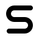
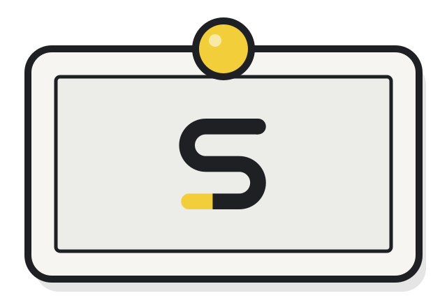
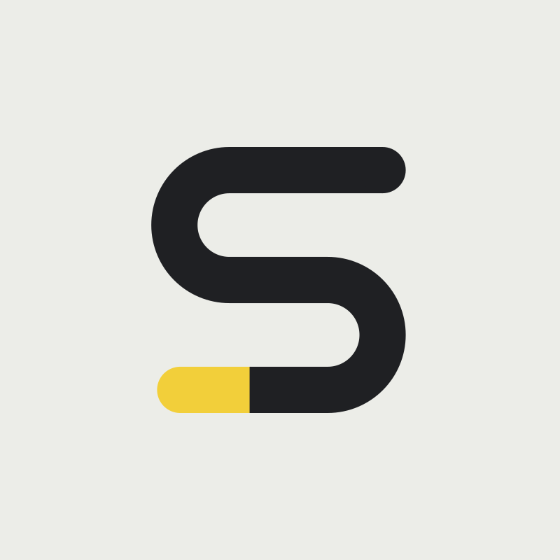
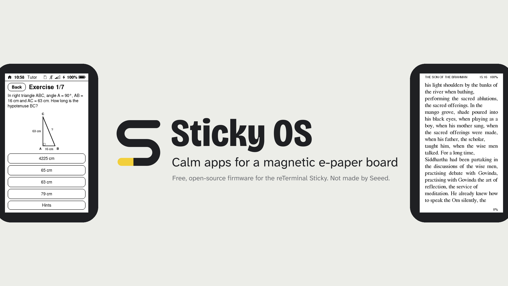
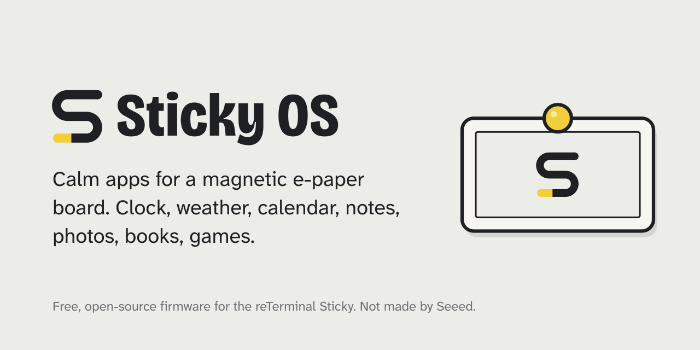
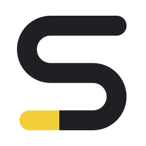

Brand
The {{NAME}} brand
The logo, the colours, the type and the ready-made files. Use them freely when you write about, review or build on {{NAME}}; please keep them as drawn.
The mark: Reading Lines
An S drawn as three lines of text read back and forth, the way your eye sweeps a note on the fridge door. The last stretch of the bottom line is the one highlighted word: the thing you came to see.
It is one thick stroke with no fine detail, so it holds at 16 pixels and on a 1-bit panel. The yellow is part of the line, not a dot after it: in one colour it is simply the S.
Next to the name it forms the lockup. The name is Bricolage Grotesque ExtraBold at 80% width, outlined in the files so it needs no font.
Clear space and small sizes
Clear space: keep at least the gap between two of the S’s lines clear on every side (about a quarter of the mark’s height). The SVG files already include it.
Smallest sizes: the mark is drawn in three cuts, each with its lines on whole pixels.
- 16 px (favicons, tabs): the S in paper on an ink tile, two-pixel lines with square ends. File: sticky-os-mark-16px.svg.
- 18 to 32 px (the site’s header, small UI): three-pixel lines on an 18 by 20 grid. File: sticky-os-mark-small.svg.
- From 32 px up: the master mark. Use the lockup from 96 px wide; below that, use the mark alone.


Colour
Paper and ink come from the panel’s own four greys. One sticky-note yellow is spent on marks only: the logo’s tail, link underlines, a tag. Never as a large field.
- Paper #ecede8 · RGB 236 237 232
Page background; the panel’s white. - Paper 2 #dfe0da · RGB 223 224 218
Cards on hover, code blocks. - Panel light grey #b9bab4 · RGB 185 186 180
The panel’s light grey; rules (#c4c5bf). - Panel dark grey #6e7074 · RGB 110 112 116
The panel’s dark grey; the tail on four-grey screens. - Graphite #4f5155 · RGB 79 81 85
Secondary text. - Ink #1f2023 · RGB 31 32 35
Text, the mark, borders; the panel’s black. - Yellow #f2cf3a · RGB 242 207 58
The mark’s tail, underlines, tags. Text on it is ink.
Dark mode
- Paper #1d1e20 · RGB 29 30 32
- Paper 2 #26282a · RGB 38 40 42
- Graphite #a9aba6 · RGB 169 171 166
- Ink #e7e8e3 · RGB 231 232 227
- Yellow #d6b941 · RGB 214 185 65
Contrast
Every text colour meets WCAG AA (4.5:1) on the backgrounds it is used on:
| Text on background | Light | Dark |
|---|---|---|
| Ink on paper | 13.8:1 | 13.5:1 |
| Ink on paper 2 | 12.3:1 | 12.0:1 |
| Graphite on paper | 6.8:1 | 7.2:1 |
| Graphite on paper 2 | 6.0:1 | 6.4:1 |
| Ink on yellow | 10.7:1 | 8.6:1 |
The yellow on paper is 1.3:1, which is why it never carries text or meaning on its own: underlined links are also told apart by the underline’s shape.
Type
Sticky OS
Bricolage Grotesque, ExtraBold (800) at 80% width for the name and big headlines; Bold at 82 to 88% for headings. By Mathieu Triay, SIL Open Font License 1.1.
A quiet home screen for the fridge door.
Atkinson Hyperlegible Next, Regular and Bold, for everything else. By the Braille Institute, SIL Open Font License 1.1.
Both fonts are served from this site; nothing loads from a font service.
Variants
Colour: on paper or white. Dark: on dark backgrounds. 
1-bit: black only, for the panel and print. Four greys: the tail in the panel’s dark grey. White: reversed, on black.
Illustration: Held

The board held to the door by one round magnet. It is an illustration for the site, videos and posts, not a second logo: don’t use it as an icon or next to the name in place of the mark.
Files: SVG · PNG, 1280 px.


On the panel
The board is the brand’s first home, so every asset is drawn black and white first. The boot screen at the panel’s real size, 800 by 480:


Do and don’t
Do
- Use the files as they are, in the variant that fits the background.
- Keep the clear space, and use the 16 px cut at favicon sizes.
- Keep the yellow small: the tail, an underline, a tag.
- Say that {{NAME}} is independent firmware for the reTerminal Sticky.
Don’t
- Recolour, stretch, rotate, outline or add effects to the mark.
- Detach the yellow tail or turn it into a dot.
- Put the mark on a yellow square or fill a large area with the yellow: that is the sticky-note look, and it isn’t ours.
- Combine the mark with Seeed’s logo, its green, or “reTerminal” lettering, or suggest that Seeed makes or endorses {{NAME}}.
Ready-made files
Everything below is also in the brand kit zip.

YouTube avatar, 800 by 800, reads at 48 px in a circle. PNG 
YouTube banner, 2560 by 1440, text inside the 1546 by 423 safe area. PNG 
GitHub social preview, 1280 by 640. PNG 
Shorts end-card logo, 288 by 288, transparent. PNG Favicons: SVG · ICO · 16 · 32 · Apple touch, 180


Mark and lockup
| Variant | Mark | Lockup |
|---|---|---|
| Colour | SVG · PNG 64 128 256 512 1024 2048 | SVG · PNG 512 1024 2048 |
| Dark | SVG · PNG 64 128 256 512 1024 2048 | SVG · PNG 512 1024 2048 |
| 1-bit | SVG · PNG 64 128 256 512 1024 2048 | SVG · PNG 512 1024 2048 |
| Four greys | SVG | SVG |
| White | SVG · PNG 64 128 256 512 1024 2048 | SVG · PNG 512 1024 2048 |


PNGs have transparent backgrounds. Lockup sizes are widths in pixels.
How to refer to {{NAME}}
- {{NAME}}: two words, capital S, OS in capitals. Not “StickyOS”, “Sticky Os” or “Sticky”.
- It is free, open-source firmware for the Seeed reTerminal Sticky, a 3.97-inch e-paper board. Name the board as Seeed does: “reTerminal Sticky”.
- Wherever you show the logo or describe the project, add the independence line:
Free, open-source firmware for the reTerminal Sticky. Not made by or affiliated with Seeed Studio.